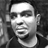
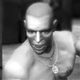

ПЕРСОНАЖИ GTA IV
ГЛАВНЫЕ
НИКО БЕЛЛИК (Niko Bellic)
Главный герой игры GTA 4. Мужчина, примерно 30-35 лет, волосы темные, глаза светло-карие. Родом из Восточной Европы.
Особые приметы: ярко выраженный акцент, залысины на лбу, шрам на левой брови.
Озвучка: Michael Hollick
РОМАН БЕЛЛИК (Roman Bellic)

Кузен Нико Беллика. Иммигрант, живет в Либерти Сити, владеет убыточным таксомоторным бизнесом. Мечтатель, которого с неба сталкивает жестокая реальность большого мегаполиса. У Романа есть подруга Мэллор иБэрдейс (Mallorie Bardas).
Особые приметы: склонный к полноте, бородка.
Озвучка: JasonZumwalt
МАЛОЙ ДЖЕЙКОБ (Little Jacob)
Поставщик нелегального оружия, партнер Нико Беллича.
Особые приметы: родина - Ямайка, Карибы; часто курит.
Озвучка: CoolieRanx
ВТОРОСТЕПЕННЫЕ
МИХАИЛ ФАУСТИН (Mikhail Faustin)
Один из боссов русской мафии. Немного не в себе от употребляемых наркотиков, не любит всякую русскую клюкву, типа самоваров.
Особые приметы: татуровка в виде черепа на груди.
Озвучка: Karel Roden
ФРЭНСИС МАККРИРИ (Francis McReary)
Продажный полицейский, знающий о грязном прошлом Беллика.
Особые приметы: светлые волосы, усы.
Озвучка: Thomas Lyons
ВЛАДИМИР ГЛЕБОВ (Vladimir Glebov)
Он русский и думает, что является очень серьезным и опасным бандитом без недостатков, который держит весь район Hovebeach в железном кулаке... Но на самом деле обычное его время-препровождения - лизание задниц вышестоящих преступных группировок. Владимир подхалим и хочет добиться большой власти и соотвествующей репутации.
Особые приметы: лысина, усы.
Озвучка: MishaKuznetsov
БРЮСИ КИБУЦ (Brucie Kibbutz)

Белый товарищ Нико. Он рэпер, серьезный бодибилдер, мало думает, но очень высокого мнения о себе. Он живет шикарной жизнью, в которую включены дорогие тачки, дорогие женщины и все самое дорогое и кричащее. В общем, жизнь его похожа на то, о чем он читает в своих любимых мужских журналах. Брюси хочет, чтобы каждый в Либерти Сити знал, какой он на самом деле крутой. Имеет автомастерскую, любимое словечко, которое он вставляет в каждом предложении - "fuck".
Особые приметы: бритая голова, атлетическое телосложение, татуировка в виде иероглифа на левой груди.
Озвучка: Timothy Adams
ФИЛЛ БЕЛЛ (Phil Bell)

Головорез из итальянской мафии. Помогает Нико найти кое-каких людей, сам взамен тоже просит некоторую помощь. Работает с Реем.
Особые приметы: ухожен, предпочитает классический костюм, крупное лицо, ямочка на подбородке.
Озвучка: Frank Bonsangue
ПЛЕЙБОЙ ИКС (Playboy X)
Постоянно дает Нико задания, неимоверно богат, живет в собственном особняке. Когда-то дружил с ДэйномФорджем, но после того как последний вышел из тюрьмы, все разладилось.
Особые приметы: афроамериканец с косячком.
Озвучка: PostellPringle
РЕЙ БОЧИНО (Ray Boccino)
Итальянский мафиози, работающий на Джимми Пегорино. По ходу игры пытается помочь Нико найти одного важного человека.
Особые приметы: мужественный, каждую встречу начинает с коронной фразы.
Озвучка: JoeBarbara
ДЖИММИ ПЕГОРИНО (Jimmy Pegorino)
Джимми - глава собственной итальянской группировки. Он хочет сделать ее одной из пяти сильнейших в городе, но остальные воспринимают его лишь как клоуна.
Особые приметы: седой благообразный мужчина.
Озвучка: Tony Patellis
ДМИТРИЙ РАСКАЛОВ (Dimitry Rascalov)
Дмитрий... Человек, который никому не верит, но за деньги (большие деньги) готов отнять у ребенка конфетку. Скользкий тип, позже в истории Нико становится чуть ли не самым главным врагом семейства Белликов.
Особые приметы: худощавый, предпочитает классическую одежду.
Озвучка: Moti Margolin
ДУЕЙН ФОРДЖ (Dwayne Forge)
Друг Плейбоя Икс, только что вышел из тюрьмы. Он боится, что Плейбой ушел в другой мир, оставив его и уличную жизнь позади. Так и есть на самом деле, только Плейбой по началу это очень удачно скрывает своим радушием.
Особые приметы: здоровенный и угрюмый афроамериканец.
Озвучка: Devin Richards
ПАТРИК МАКРИРИ (Dwayne Forge)
Родственник полицейского Фрэнсиса Макрири. Ирландский хулиган, для друзей просто «Пакки». Живет вместе с матерью и сестрой, и жутко недоволен этим. Поначалу промелькнувшая симпатия между Нико и сестрой ему не то чтобы нравится...
Особые приметы: очень короткие волосы, большие уши, шрам под левым глазом.
Озвучка: Ryan Johnston
ЭЛИЗАБЕТ ТОРРЕС (Elizabeta Torres)
Опасная наркоманка. Больше десяти лет успешно торгует наркотой в Bohan. Успех этот добыт нелегким трудом, в котором есть место и предательству, и даже убийствам. В последнее время она страдает паранойей и бредом вследствие приема слишком больших доз. И это явно плохо на ней сказывается.
В общем, она лакомый кусочек для такой игры, как GTA 4.
Особые приметы: большая грудь, неуравновешенный взрывной характер.
Озвучка: Charlie Parker
МЕННИ ЭСКУЛА (Manny Escuela)
Это плохой парень, который стал вдруг хорошим. Раньше, чуть ли не с самого рождениям, он был обычным хулиганом. Рисовал граффити на стенах, танцевал брейкданс. Но с определенных пор (какие-то гангстерские разборки) он клянется, что перешел на сторону «добра» и будет помогать в этом каждой заблудшей овце, что встретиться на его пути. Быть может именно поэтому он снимает документальный фильм о своем великом деле (Мэнни никого не любит, кроме себя самого) - превращении улиц в нормальное общество.
Особые приметы: афроамериканец, любитель золотых побрякушек.
Озвучка: Berto Colon
БЛЕДЕР МОРИНА (Bledar Morina)
Ростовщик из Албании. Работает в Брокере. Попутно занимается вымогательством, разбоем и накачкой своих мышц. В действии его можно увидеть в третьем трейлере GTA 4 на 58-й секунде.
Особые приметы: имеет при себе нож, мускулистого телосложения.
МЭЛЛОРИ БЭРДЕЙС (Mallorie Bardas)
Подруга Романа.
Особые приметы:нет
Озвучка: Elena Harvey Hurst
ОСТАЛьНЫЕ
Подруги Нико - Мишель и Кэйт, сестра Патрика Макрири.
МИМОЛЕТНЫЕ
АНДРЕЙ (Andrey)
Один из парней, преследовавших Нико и Романа. Бывший наемник, работал в Чечне. Будет убит Фаустиным практически просто так.
КАРЕН (Karen)

Офис-менеджер Тома Голдберга.
ЛОЛА ДЕЛЬ-РИО (Loladel Rio)

Лола - проститутка, работает возле доков. В игре ее можно найти через полицейскую базу. Там будет сказано, что Лола стала первой проституткой, которая вернулась на StarJunction, хотя эту область и объявили семейной. К сожалению, в игре Лолы не найти.
ТОМ ГОЛДБЕРГ(Tom Goldberg)

Адвокат, перешедший дорогу влиятельным людям, одна из жертв Нико.
БРЮС ДОКИНС(Bryce Dawkins)
Представитель мэрии Либерти Сити, консерватор. Известен своей программой здоровья, которая пропагандирует воздержание.
ЮСУФ АМИР (Usuf)
Богатый араб, задание которого выполняет Плейбой, в свою очередь, перепоручая его Нико.